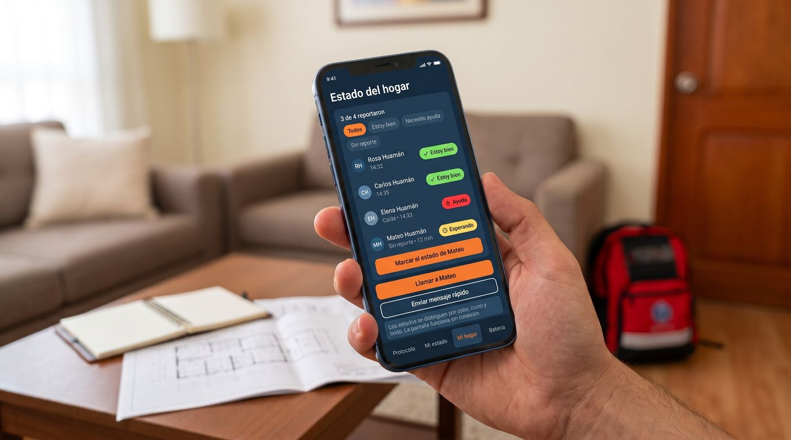
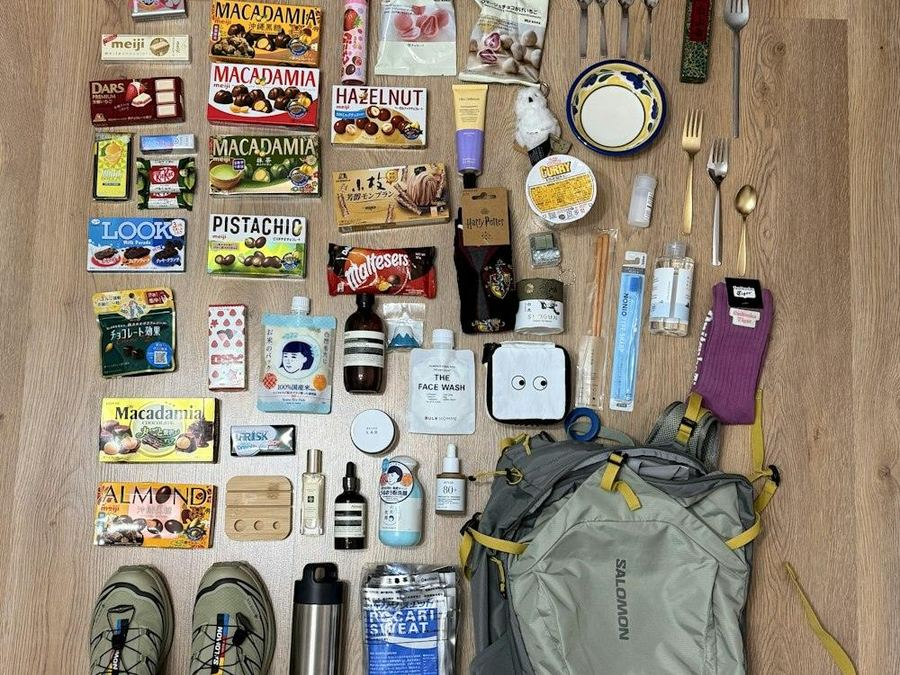
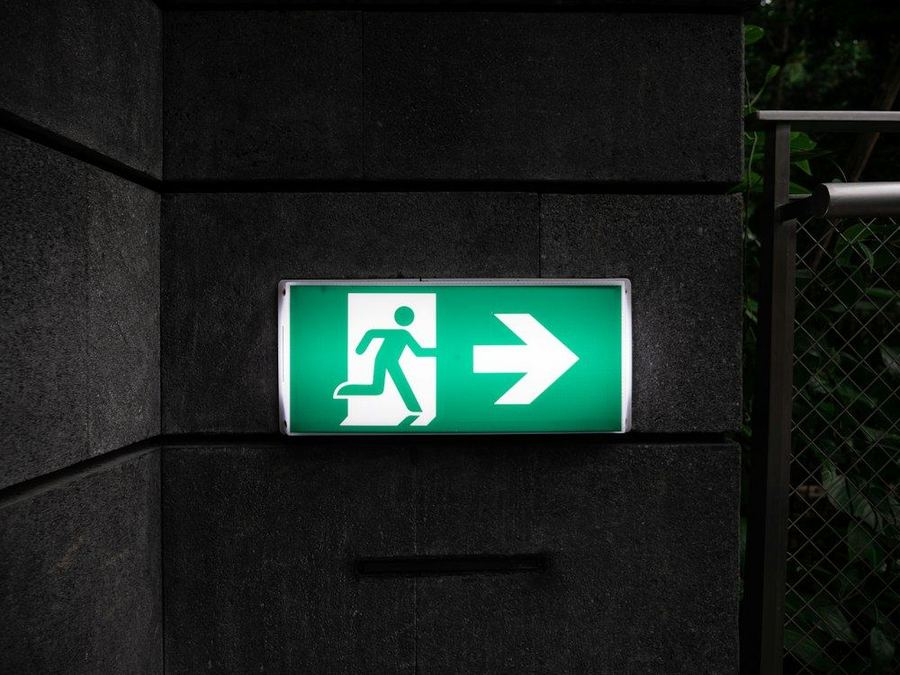
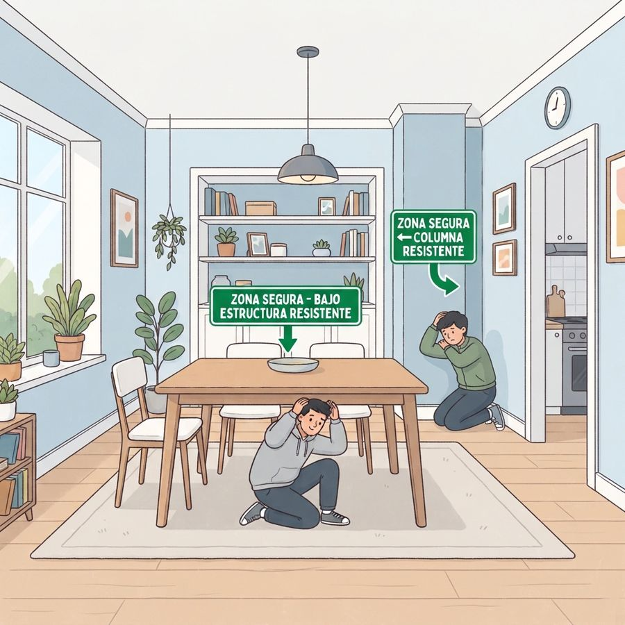
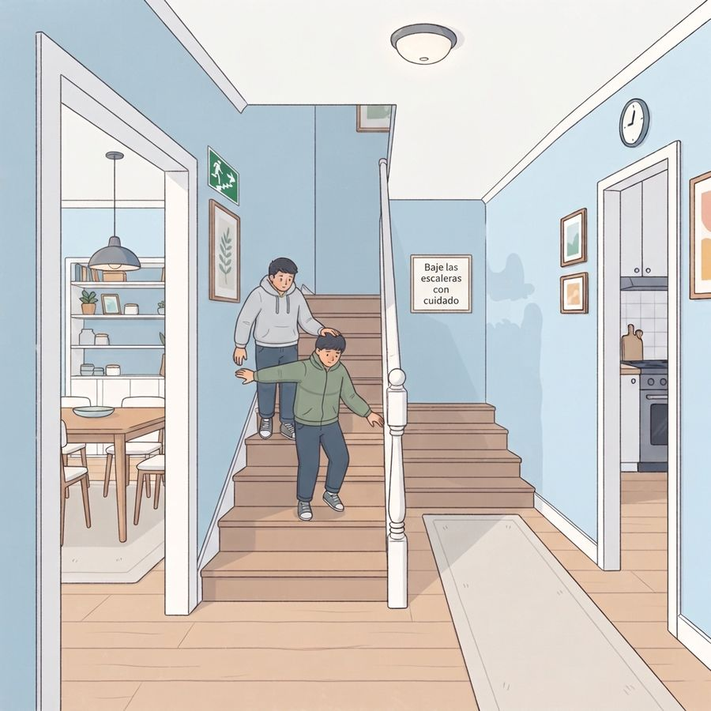
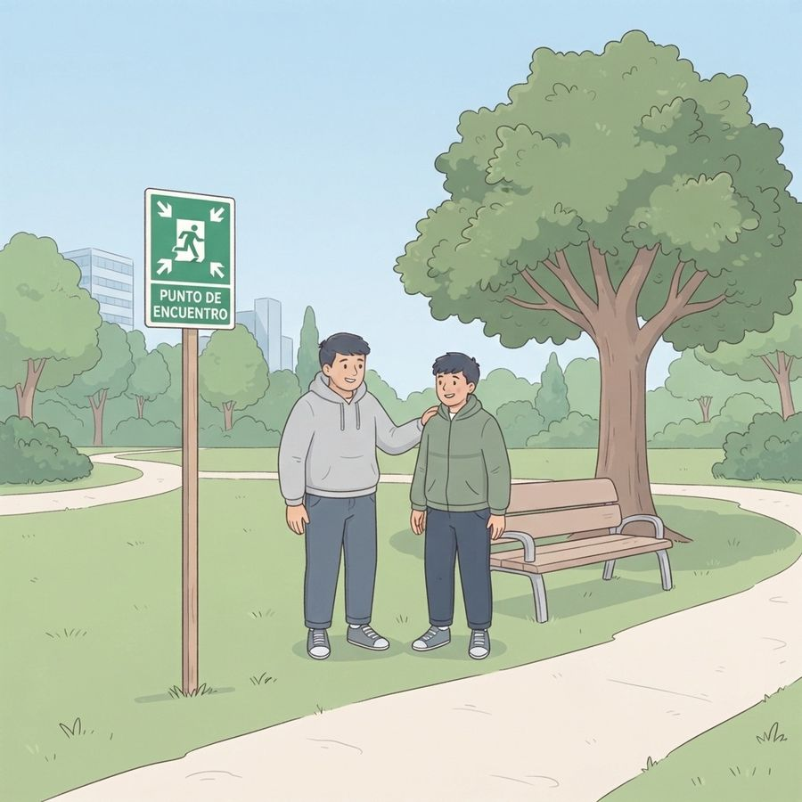

SismoListo Tu asistente para prepararte y actuar ante un sismo
Reunimos en un solo lugar lo que tu familia necesita saber sobre sismos y lo convertimos en un plan con pasos cortos y fáciles de seguir, tanto para prepararse con calma como para actuar durante una emergencia.

¿Por qué es difícil prepararnos ante un sismo?
Lima tiene un alto riesgo sísmico. Muchas familias no tienen un plan acordado ni practican qué hacer, y la información disponible suele ser difícil de seguir bajo estrés o cuando no hay internet. Por eso, cuando ocurre un sismo, cuesta reaccionar a tiempo.
Noticias frecuentes:
1. Crea tu cuenta
2. Crea tu hogar
3. Integrantes de tu hogar
4. Código para unir a tu familia
Comparte este código con los integrantes de tu hogar. Al ingresarlo en su celular, verán el mismo plan familiar:
Vence en 48 horas.
Ya se unió: Carlos Huamán; ya ve el plan en su celular. Pendiente: Mateo Huamán (invitado).
5. Asignación de roles
Elige a un integrante y escribe el rol que cumplirá durante una emergencia:
6. Qué hacer según dónde estés
Escribe qué debe hacer cada integrante si el sismo lo sorprende en casa o fuera de ella.
Integrantes sin acciones definidas
Recomendaciones generales
Dentro de casa
Ve a la zona segura de tu casa y aléjate de ventanas y muebles altos.
Durante la evacuación
Sal con calma, usa las escaleras y nunca el ascensor.
Fuera de casa
Ve al punto de encuentro que acordó tu familia.
7. Punto de encuentro fuera de casa
8. Zonas seguras dentro de casa
9. Resumen de tu plan familiar
Integrantes y roles
- Rosa Huamán: Asistir a Elena
- Carlos Huamán: Llevar la mochila
- Mateo Huamán: Cortar luz y gas
Lugares clave
Punto de encuentro: Parque frente al mercado
Lugar de resguardo: Junto a la columna de la sala
Elena Huamán se resguarda: Junto a la columna de la sala
Logística y preparación preventiva
SismoListo te sugiere qué llevar en la mochila de emergencia según las necesidades de tu hogar y las recomendaciones del INDECI.
Puedes agregar o quitar elementos de la lista, y la app te indica cuánta agua necesitan según el número de integrantes.
Marca con «Lo tengo» lo que ya reuniste: verás cuánto llevas y, si quieres, solo lo que te falta. Si algo vence, vuelve a la lista de faltantes.

Mochila de emergencia
Lista sugerida para tu mochila
Basada en el plan familiar de emergencia de INDECI y UNICEF.
Practica la evacuación de tu hogar con un simulacro corto: la app te muestra los pasos a seguir y un cronómetro con el tiempo que tardan.
Al terminar, marca el simulacro como completado para guardar el tiempo, o cancélalo si no quieres registrarlo.
Programa un recordatorio mensual para todo el hogar: desde el aviso puedes empezar el simulacro directamente.

Simulacro exprés cronometrado
Modo Emergencia
Actívalo solo durante un sismo o ante un peligro inmediato. Te guiará para evacuar y avisar a tu familia cómo estás.
¿Activar el Modo Emergencia? Úsalo solo durante un sismo o ante un peligro inmediato.
1. Mantén la calma y ve a la zona segura
Cúbrete la cabeza y aléjate de ventanas, espejos y muebles o estantes que puedan caerse.

2. Sal con calma, sin correr
Cuando pare el movimiento, sigue las rutas señalizadas, baja por las escaleras y nunca uses el ascensor.

3. Ve al punto de encuentro
Al llegar, mantente lejos de postes de luz, cables caídos y fachadas que puedan desprenderse.

¿Cómo estás?
Elige una opción para avisar a tu familia:
Pide ayuda
Estado del hogar
3 de 4 integrantes reportaron
Desde el sismo: 12 min
Aún sin reporte
Ya reportaron
Nadie tiene ese estado ahora.
Funciona sin internet: muestra el último estado guardado en tu celular.
Enviar mensaje a Mateo Huamán
Elige un mensaje para enviarlo rápido por SMS:
Mensaje enviado a Mateo Huamán por SMS.
Después del sismo
Ya enviaste tu reporte. Antes de cerrar el Modo Emergencia, revisa estos pasos.
4 pasos para después del sismo:
- Revisa si hay personas heridas o daños en la vivienda antes de volver a entrar.
- Si hay fugas u olor a gas, cierra las llaves de gas y agua.
- Infórmate solo por canales oficiales (INDECI, COEN) y no compartas rumores.
- Ten la mochila de emergencia a la mano: puede haber réplicas.
1. Integrantes que requieren asistencia
Marca a los integrantes que necesitan ayuda para ponerse a salvo e indica el tipo de apoyo. Si un integrante no tiene responsable asignado, la app te lo advierte.
2. Contactos de emergencia externos
Registra hasta 5 contactos que no viven contigo. Quedan guardados en tu celular y los puedes ver sin internet.
3. Resumen del plan familiar
Todo tu plan en una sola pantalla, con frases cortas. Funciona sin internet y lo puedes compartir como imagen.
Integrantes y roles: 4 integrantes, 3 con rol asignado
Punto de encuentro: Parque frente al mercado
Zona segura en casa: Junto a la columna de la sala
Contactos externos: 2 guardados
Imagen compartida con éxito
4. Progreso del plan familiar
Mira cuánto falta y avanza por partes. Cada paso pendiente toma menos de 5 minutos.
50 % completado (3 de 6 secciones)
5. Modo de ahorro de batería
Si tu celular tiene poca carga, baja el brillo y deja solo lo esencial del Modo Emergencia. Lo activas o desactivas cuando quieras.
Batería estimada restante: 18 % · alcanza para unas 5 horas
Brillo reducido al 40 % y solo las funciones esenciales del Modo Emergencia.
En pausa: sincronización de fotos, actualizaciones automáticas y animaciones.
Brillo y funciones normales. Actívalo si te queda poca carga.
6. Texto ampliado y alto contraste
Haz clic en cada opción para probar cómo cambia la lectura en toda la página:
7. Guías breves: durante y después de un sismo
Pasos cortos, en lenguaje simple y disponibles sin internet.
Durante el sismo
- Mantén la calma y cúbrete la cabeza.
- Aléjate de ventanas y muebles que puedan caerse.
- Ve a tu zona segura.
Después del sismo
- Revisa si hay personas heridas o daños.
- Si hay fugas, cierra las llaves de gas y agua.
- Infórmate solo por canales oficiales (INDECI, COEN).